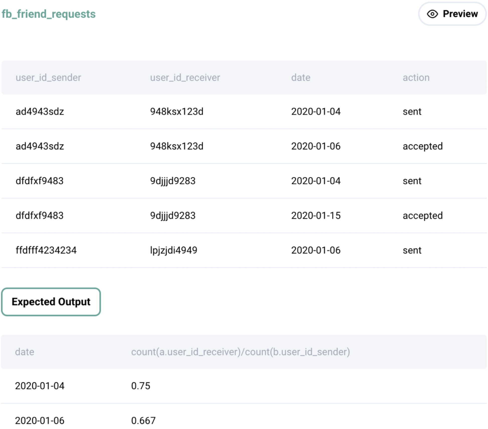

Question sourced from StrataScratch.com.
Database: MySQL
What is the overall friend acceptance rate by date? Your output should have the rate of acceptances by the date the request was sent. Order by the earliest date to latest.
Assume that each friend request starts by a user sending (i.e., user_id_sender) a friend request to another user (i.e., user_id_receiver) that's logged in the table with action = 'sent'. If the request is accepted, the table logs action = 'accepted'. If the request is not accepted, no record of action = 'accepted' is logged.

/*
My strategy: Since each row in the the fb_friend_requests table
represents an action related to a friend request (i.e. sent or accepted),
and each friend request that was sent may or may not have been accepted,
a result set must be generated where each row represents one friend
request sent. To achieve this, group by sender and receiver (i.e. the
unique friend request "pair"), and derive columns for: the sent date
(i.e. row with the earliest date), the update date (i.e. row with the
latest date; if the request was NOT accepted, then the update date will
be the same as the sent date), and whether or not the request was accepted
(i.e. 1 means yes, 0 means no). Wrap this result set in a CTE. To find
friend acceptance rate by date from this CTE, group by sent date, then
divide the total acceptances on that date by the total requests sent on
that date.
*/
WITH requests_itemized AS (
SELECT MIN(date) AS sent_date, MAX(date) AS updated_date,
user_id_sender, user_id_receiver,
SUM(IF(action = 'accepted', 1, 0)) AS was_accepted
FROM fb_friend_requests
GROUP BY user_id_sender, user_id_receiver
)
SELECT sent_date,
SUM(was_accepted) / COUNT(*) AS acceptance_rate
FROM requests_itemized
GROUP BY sent_date
ORDER BY sent_date;